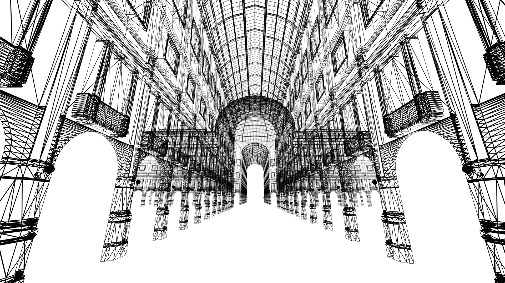
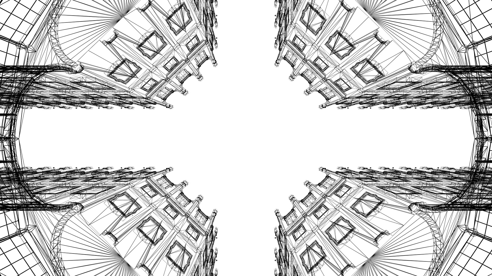
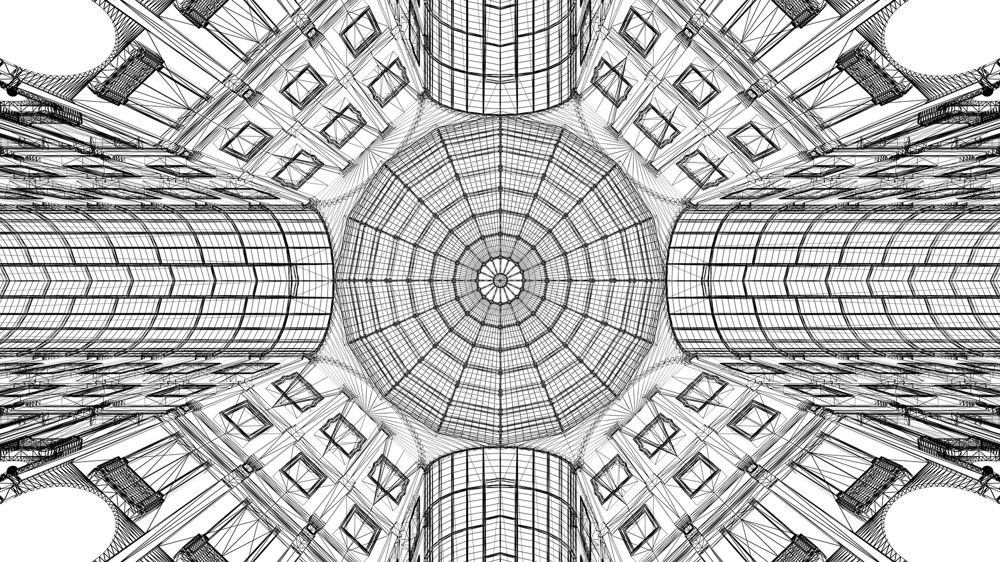
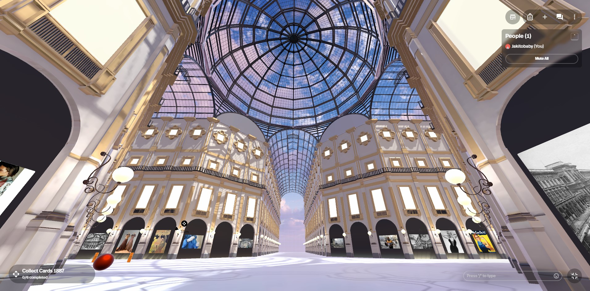
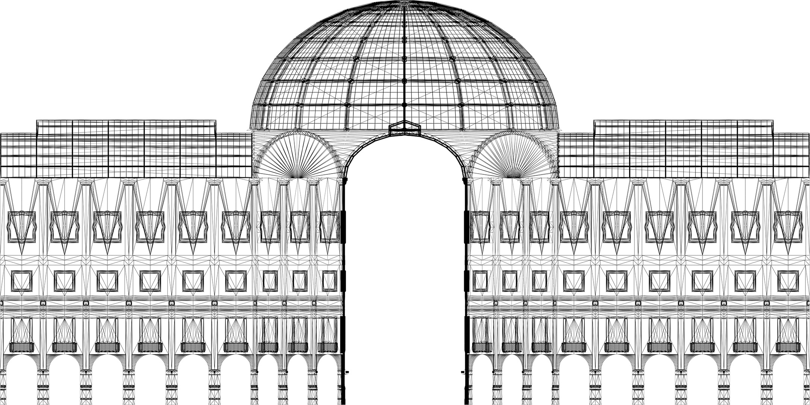
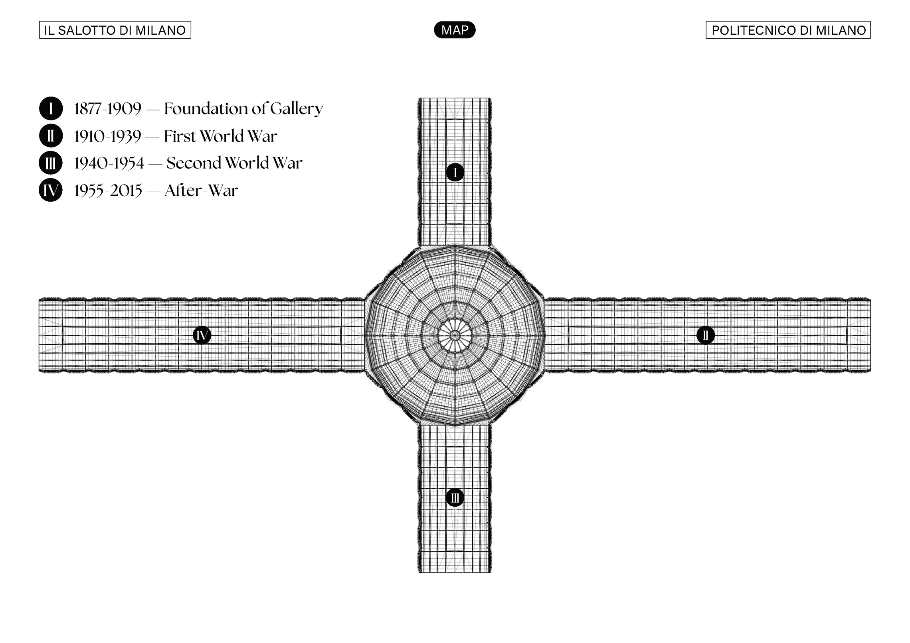

Milan’s Galleria Vittorio Emanuele II in the metaverse.
Developed for the Anthropology of Communication course at Politecnico di Milano, the project is part of CityVerse: a concept that brings elements of the urban fabric into the metaverse to explore new forms of digital interaction.
The Galleria Vittorio Emanuele II was chosen as both a symbol of Milan and a structure naturally divided into four sections. I modelled it in Blender, simplifying its forms while preserving the character of the original architecture.



The model was integrated into Spatial.io through its Unity editor. Players explore the digital Galleria and collect elements that reveal information about its history.

Each of the Galleria’s four sections represents a different historical period. Completing an area replaces its present-day appearance with a custom texture that evokes that moment in time.


Salotto di Milano’s identity draws on the Galleria’s geometry, viewed from above as an orthogonal projection.